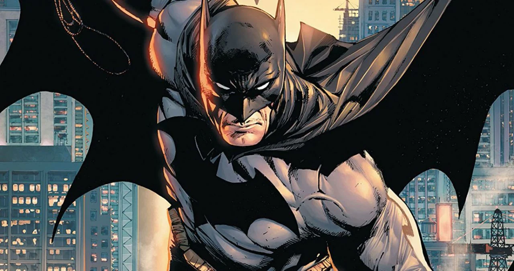
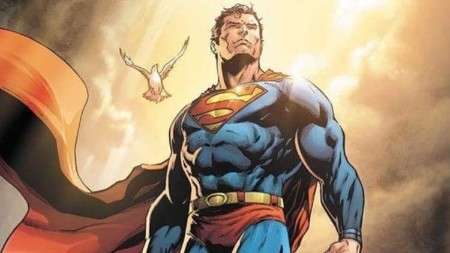
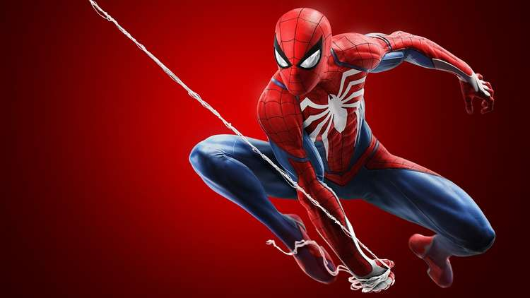

Batman is a superhero who appears in American comic books published by DC Comics. Batman was created by artist Bob Kane and writer Bill Finger, and debuted in the 27th issue of the comic book Detective Comics on March 30, 1939. In the DC Universe continuity, Batman is the alias of Bruce Wayne, a wealthy American playboy, philanthropist, and owner of Wayne Enterprises based in Gotham City. Kane, Finger, and future DC writers accompanied Batman with supporting characters, including his sidekick Robin, allies Alfred Pennyworth and James Gordon, and foes such as Catwoman, the Scarecrow, the Penguin, and his archenemy, the Joker.
Superman is a fictional superhero, who first appeared in American comic books published by DC Comics. The character was created by writer Jerry Siegel and artist Joe Shuster, and first appeared in the comic book Action Comics #1 (cover-dated June 1938 and published April 18, 1938).[1] Superman has been adapted to a number of other media which includes radio serials, novels, movies, television shows and theatre. Superman was born on the planet Krypton and was given the name Kal-El at birth. As a baby, his parents sent him to Earth in a small spaceship moments before Krypton was destroyed in a natural cataclysm.
Wonder Woman is a fictional superheroine appearing in American comic books published by DC Comics.[3] The character is a founding member of the Justice League. The character first appeared in All Star Comics #8 in October 1941[1] with her first feature in Sensation Comics #1 in January 1942. The Wonder Woman title has been published by DC Comics almost continuously except for a brief hiatus in 1986.[4] In her homeland, the island nation of Themyscira, her official title is Princess Diana of Themyscira. When blending into the society outside of her homeland, she sometimes adopts her civilian identity Diana Prince.[5]
Spider-Man is a fictional superhero created by writer-editor Stan Lee and writer-artist Steve Ditko. He first appeared in the anthology comic book Amazing Fantasy #15 (Aug. 1962) in the Silver Age of Comic Books. He appears in American comic books published by Marvel Comics, as well as in a number of movies, television shows, and video game adaptations set in the Marvel Universe. In the stories, Spider-Man is the alias of Peter Parker, an orphan raised by his Aunt May and Uncle Ben in New York City after his parents Richard and Mary Parker died in a plane crash.
